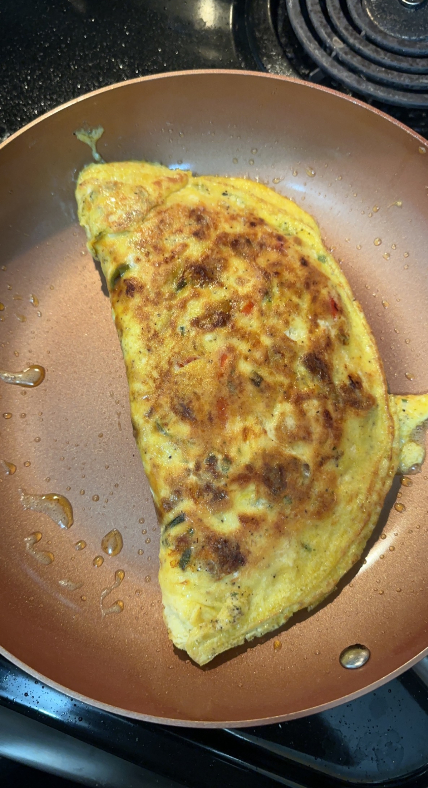
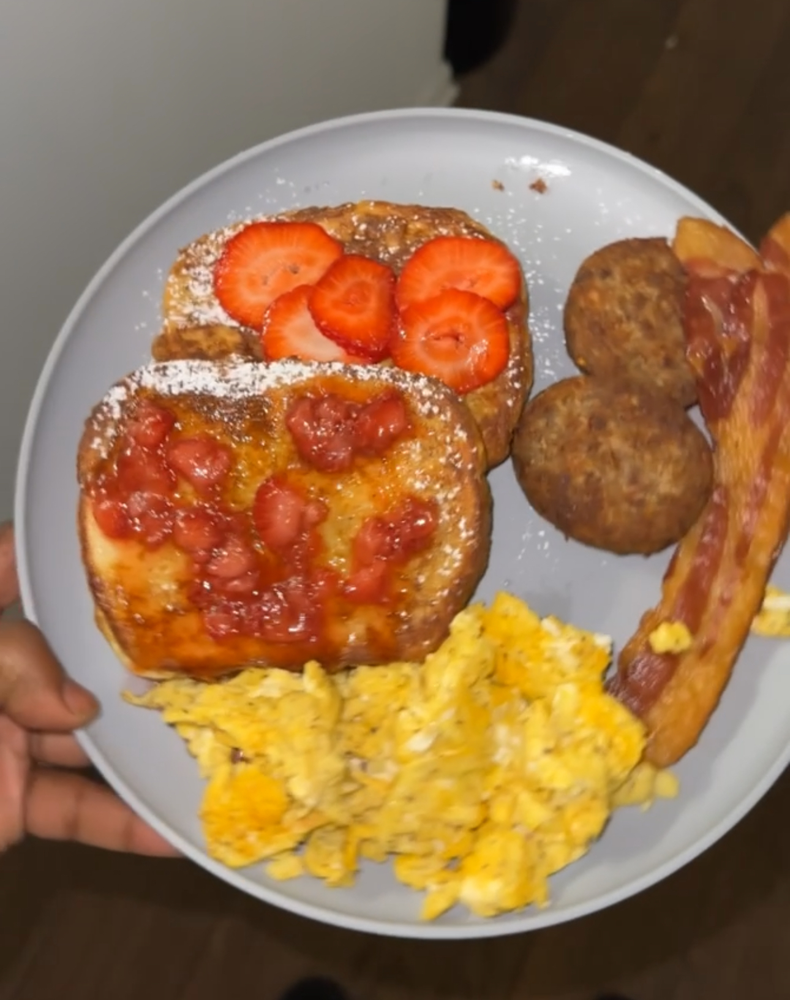

<!DOCTYPE html>
<html lang="en"></html>
    <head>
         <!-- Google tag (gtag.js) -->
         <script async src="https://www.googletagmanager.com/gtag/js?id=G-363JGFE3P9"></script>
         <script>
         window.dataLayer = window.dataLayer || [];
         function gtag(){dataLayer.push(arguments);}
         gtag('js', new Date());
 
         gtag('config', 'G-363JGFE3P9');
         </script>
        <title>Diverse Cooking Inspirations</title>
        <meta charset="UTF-8">
        <meta name="description" content="Breakfast insipirations">
        <meta name="keywords" content="Breakfast, Dinner, Recipe, Vegetarian, Diverse food, Inspirations">
        <meta name="author" content="Tyquan Spurgeon">
        <meta name="viewport" content="width=device-width, initial-scale=1.0">
        <link href="styles.css" rel="stylesheet">
        
    </head>
    

    <body>
        <header>
            
                <div class="logo">
                
                </div>
                <div class="container">
                    <h1>Diverse Cooking Inspirations For You</h1>
            </div>
            <nav>
                <ul>
                    <li><a href="index.html">Home</a></li>
                    <li><a href="info.html">Breakfast</a></li>
                    <li><a href="form.html">Dinner</a></li>
                    <li><a href="form1.html">Users Contributions</a></li>

                </ul>
            </nav>
</header>
            

        <main>
            <div class="container">
                <h1 class="breakfastHeader" >
                   Breakfast: The Most Important Meal Of The Day
                </h1>
            
            
                <!-- Slideshow container -->
            <div class="slideshow-container">

            <!-- Full-width images with number and caption text -->
                <div class="mySlides fade">
                    <div class="numbertext">1 / 5</div>
                    
                    <div class="text">Buttery crisped edge pancakes with a side of delicious seasoned fluffy eggs:
                        This is a quick meal of Mrs. Butterworth's pancake mix with a dash of vanilla extract, seared on a pan with butter, and fluffy scrambled eggs seasoned with salt and pepper cooked with buttert</div>
                </div>
            
                
            
                <div class="mySlides fade">
                    <div class="numbertext">2 / 5</div>
                    
                    <div class="text">Sausage Egg Omelete cooked with cheese, onions, bell peppers, spinach, mushrooms, and tomatoes.</div>
                </div>

                

                <div class="mySlides fade">
                    <div class="numbertext">3 / 5</div>
                    
                    <div class="text">French toast with powdered sugar, strawberries, and homade strawberry puree alognside fluffy eggs, pork sausage, and baccon.</div>

                </div>

                

                <div class="mySlides fade">
                    <div class="numbertext">4 / 5</div>
                    
                    <div class="text">Sausgen and cheesey folded eggs stuffed between two buttery Crsiped edged pancakes.</div>
                </div>

              

                <div class="mySlides fade">
                    <div class="numbertext">5 / 5</div>
                    
                    <div class="text">Fried bologna and fried egg with cheese in between two pieces of buttery toast.</div>
                </div>

                <!-- Next and previous buttons -->
                <a class="prev" onclick="plusSlides(-1)">&#10094;</a>
                <a class="next" onclick="plusSlides(1)">&#10095;</a>
            </div>
            <br>
            
            <!-- The dots/circles -->
            <div style="text-align:center">
                <span class="dot" onclick="currentSlide(1)"></span>
                <span class="dot" onclick="currentSlide(2)"></span>
                <span class="dot" onclick="currentSlide(3)"></span>
                <span class="dot" onclick="currentSlide(4)"></span>
                <span class="dot" onclick="currentSlide(5)"></span>
            </div>
                
            
        </main>
        <footer>
            
                
                
                <p>Diverse Cooking Inspirations For You </p>
            <p> &copy; 2023 Tyquan Spurgeon, University Of South Carolina, Columbia South Carolina</p>
            <script src="script.js"></script>

        </footer>
        

    </body>
</html>

